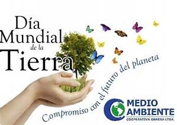

Dia Internacional de la madre Tierra 22 de abril


- 

Realizado por:
Maya Vazquez Erick
4° "H"
Especialidad:
Programación
Submódulo:
Desarrolla Aplicaciones Móviles
Docente
Lic.Jóse Antonio Gómez Hernández
4° "H"
Desarrolla Aplicaciones Móviles
Lic.Jóse Antonio Gómez Hernández
Celebramos el Día Internacional de la Madre Tierra para recordar que el planeta y sus ecosistemas nos dan la vida y el sustento. Con este día, asumimos, ademas, la responsabilidad colectiva, como nos recordaba la Declaración de Río de 1992, de fomentar armonía con la naturaleza y la Madre Tierra. Este día nos brinda también la oportunidad de concienciar a todos los habitantes del planeta acerca de los problemas que afectan a la Tierra y a las diferentes formas de vida que en él se desarrollan.

En 1968, Morton Hilbert y el U.S. Public Health Service (Servicio de Salud Pública de E.E.U.U.), organizaron el Simposio de Ecología Humana, se realiza una conferencia por los nombrados anteriormente para una asamblea o conferencia medioambiental para que estudiantes escucharan a científicos hablar sobre los efectos del deterioro ambiental en la salud humana. Este fue el primer antecedente del Día de la Tierra. Durante los siguientes dos años, Hilbert y sus estudiantes trabajaron para planear el primer Día de la Tierra. Surgieron otros esfuerzos como Survival Project (Proyecto para la Supervivencia), uno de los primeros eventos educacionales de conciencia ambiental, que fue llevado a cabo en la Universidad Northwestern el 23 de enero de 1970. Este fue el primero de varios eventos realizados en campus universitarios por todo Estados Unidos. Así mismo, Ralph Nader empezó a hablar acerca de la importancia de la ecología en 1970. La primera manifestación tuvo lugar el 22 de abril de 1970, promovida por el senador y activista ambiental Gaylord Nelson, para la creación de una agencia ambiental. En esta convocatoria participaron dos mil universidades, diez mil escuelas (primarias y secundarias) y centenares de comunidades. La presión social tuvo sus logros y el gobierno de los Estados Unidos creó la Environmental Protection Agency (Agencia de Protección Ambiental) y una serie de leyes destinadas a la protección del medio ambiente. En 1972 se celebró la primera conferencia internacional sobre el medio ambiente. La Cumbre de la Tierra de Estocolmo cuyo objetivo fue sensibilizar a los líderes mundiales sobre la magnitud de los problemas ambientales. Actualmente esta celebración, esta siendo opacada en Los Estados Unidos de América, por Donald John Trump; así como lo ha hecho con diversos programas relacionados, en el corto tiempo que lleva en la presidencia de dicho país.
«Madre Tierra» es una expresión común utilizada para referirse al Planeta Tierra en diversos países y regiones, lo que demuestra la interdependencia existente entre los seres humanos, las demás especies vivas y el planeta que todos habitamos. La Tierra y sus ecosistemas son nuestro hogar. Para alcanzar un justo equilibrio entre las necesidades económicas, sociales y ambientales de las generaciones presentes y futuras, es necesario promover la armonía con la naturaleza y el planeta. Celebramos el Día Internacional de la Madre Tierra para recordar que el planeta y sus ecosistemas nos dan la vida y el sustento. Con este día, asumimos, además, la responsabilidad colectiva, como nos recordaba la Declaración de Río de 1992, de fomentar esta armonía con la naturaleza y la Madre Tierra. Este día nos brinda también la oportunidad de concienciar a todos los habitantes del planeta acerca de los problemas que afectan a la Tierra y a las diferentes formas de vida que en él se desarrollan.
El 23 de abril de 2018 se realizó en la sede de las Naciones Unidas en Nueva York, el 8° Diálogo Interactivo sobre Armonía con la Naturaleza, en ocasión de la conmemoración del Día Internacional de la Madre Tierra. El evento fue convenido por el Presidente de la Asamblea General, Miroslav Lajcak, quien destacó la importancia del Diálogo para intercambiar ideas sobre desarrollo y patrones de producción y consumo sostenibles en armonía con la naturaleza. Durante la jornada, se discutió sobre cómo los marcos legales y económicos de la Jurisprudencia de la Tierra impactan la implementación de patrones de producción y consumo sostenibles en Armonía con la Naturaleza. El Diálogo se realizó con el objetivo de inspirar a los ciudadanos y las sociedades a reconsiderar la relación que mantienen con la naturaleza, acorde a la meta 12.8 de los Objetivos de Desarrollo Sostenible con respecto a los patrones de consumo y producción sostenibles.

Amigos de la Tierra, Ecologistas en Acción, Greenpeace, SEO/BirdLife y WWF han hecho públicas las propuestas que consideran imprescindibles para que los programas políticos que se presenten de cara a la próxima legislatura avancen hacia la sostenibilidad ambiental, la justicia social y la promoción del empleo verde. 1.ª Crear una Vicepresidencia de Sostenibilidad y Ministerio de Medio Ambiente. 2.ª Reforzar la Fiscalía Coordinadora de Medio Ambiente y Urbanismo y dotarla de más medios. 3.ª Reconocer y reforzar el papel de las organizaciones ambientales. 4.ª Establecer una Ley de Fiscalidad Ambiental que redistribuya la carga fiscal primando las buenas prácticas que promuevan el ahorro, la restauración ambiental y la creación de empleo ligado al medio ambiente. 5.ª Poner en marcha un plan ambicioso de mejora de la calidad del aire de ámbito estatal. 6.ª Prohibir de manera urgente el Bisfenol-A y otros disruptores endocrinos. 7.ª Prohibir el uso y abuso de animales con fines lúdicos o publicitarios a través de una Ley de Protección Animal. 8.ª Aprobar una Ley de Cambio Climático. 9.ª Realizar una auditoría energética de los costes reales del sistema como primer paso para poner en marcha una nueva política energética coherente que impulse el ahorro y la eficiencia energética, la producción descentralizada de energía renovable eliminando las subvenciones a los combustibles fósiles y acometiendo el cierre de las centrales nucleares tras 30 años de funcionamiento. 10.ª Aprobar una Ley de Movilidad Sostenible. 11.ª No construir más embalses ni trasvases. 12.ª Rediseñar una política agroalimentaria respetuosa con el medio ambiente. 13.ª No dar ni un paso atrás en la política de tolerancia cero contra la pesca ilegal —IUU—. 14.ª Apoyar a escala europea una política de Economía Circular ambiciosa que garantice una reducción del uso de recursos naturales por nuestra economía. 15.ª Dotar económicamente el Fondo para la Conservación de la Biodiversidad para garantizar el cumplimiento del Plan Estratégico para el Patrimonio Natural. 16.ª Derogar la modificación de la Ley de Costas para asegurar la conservación de los ecosistemas costeros amenazados. 17.ª Rechazar explícitamente el Tratado Transatlántico de Comercio e Inversiones (TTIP).